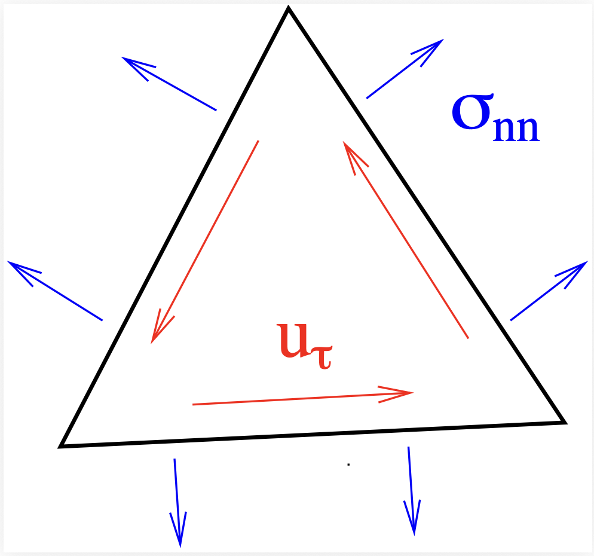
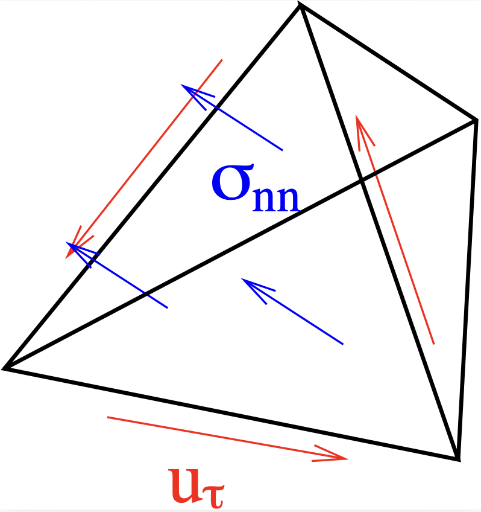
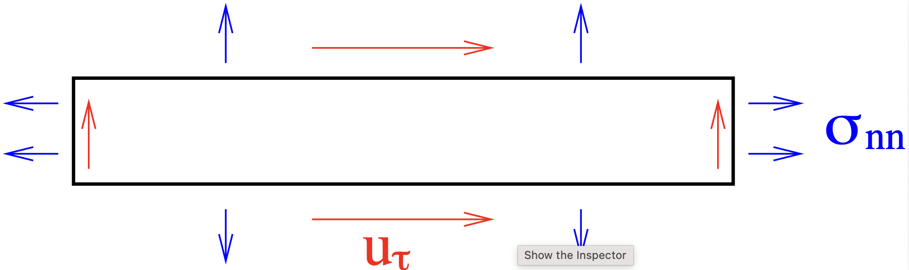
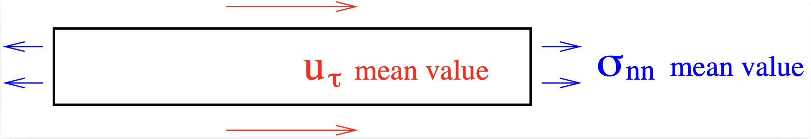
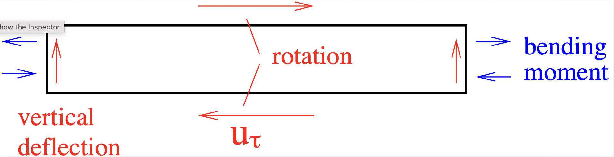

23. TDNNS#
Tangential-Displacement and Normal-Normal-Stress. Thesis by Astrid Pechstein
23.1. Idea of degrees of freedom#
{kind=link}

The tangential dofs control sliding along the edge, the linear normal component of the normal stress vector compensates force and angular momentum.
{kind=link}

The tangential odfs control sliding and rotations along the face, the linear normal component of the normal stress vector compensates force and angular momentum.
23.1.1. Dofs for a (stretched) quadrilateral#
{kind=link}

Even part of longitudinal and odd part of transversal component of displacements, and even part of longitudinal stresses prescribe stretching:

{kind=link}
Odd part of longitudinal and even part of transversal component of displacements, and odd part of longitudinal stresses prescribe bending:
{kind=link}

23.2. Hellinger Reissner mixed methods for elasticity#
Primal mixed method: Find \(\sigma \in L_2^{SYM}\) and \(u \in [H^1]^d\) such that
Dual mixed method: Find \(\sigma \in H(\operatorname{div}, {\mathbb S})\) and \(u \in [L_2]^d\) such that
23.3. Reduced Symmetry mixed methods#
Decompose
Impose symmetry of the strain tensor by an additional Lagrange parameter:
Find \(\sigma \in [H(\operatorname{div})]^2\), \(u \in [L_2]^2\), and \(\omega \in L_2^{skew}\) such that
The solution satisfies \(u \in L_2\) and \(\omega \in L_2\), i.e.,
Arnold+Brezzi, Stenberg,…
23.4. The beam-scale:#
is understood as
\(\left< \operatorname{div} \sigma, u \right>_{H^{-1} \times H^1} \quad \) |
\(\left< \operatorname{div} \sigma, u \right>_{H(\operatorname{curl})^* \times H(\operatorname{curl}} \quad \) |
\((\operatorname{div} \sigma, u )_{L_2}\) |
|---|---|---|
displacement |
||
\(u \in [H^1]^d\) |
\(u \in H(\operatorname{curl})\) |
\(u \in L_2\) |
continuous f.e. |
tangential continuous |
discontinuous f.e. |
stress |
||
\(\sigma \in L_2(\mathbb{S})\) |
\(\sigma \in H(\operatorname{div} \operatorname{div})\) |
\(\sigma \in H(\operatorname{div}, {\mathbb S})\) |
discontinuous f.e. |
\(\sigma_{nn}\) continuous |
\(\sigma_n\) continuous |

23.5. Explicit integration by parts formulas#
The elasticity problem is equivalent to the mixed problem: Find \(\sigma \in H(\operatorname{div} \operatorname{div})\) and \(u \in H(\operatorname{curl})\) such that for tangentially continuous \(v\) and normal-normal continuous \(\tau\):
Proof: The second line is equilibrium, plus tangential continuity of the normal stress vector:
Since the space requires continuity of \(\sigma_{nn}\), the normal stress vector is continuous.
Element-wise integration by parts in the first line gives
This is the constitutive relation, plus normal-continuity of the displacement. Tangential continuity of the displacement is implied by the space \(H(\operatorname{curl})\).
23.6. Distributional divergence#
\(\DeclareMathOperator{\opdiv}{div}\) \(\DeclareMathOperator{\opcurl}{curl}\)
Let \(\sigma \in V_{dd}^k\) (normal-normal continuous). Then the distributional divergence \(f := \opdiv \sigma\) is
\(f = \opdiv \sigma \) consists of element-terms and facet-terms:
It can be applied to \(v_h \in {\mathcal N} \subset H(\opcurl)\).
Write duality pairing as $\( \left< \opdiv \sigma, v \right> \qquad \text{for} \; \sigma \in V_{dd}^k, \; v \in {\mathcal N}^k \)$